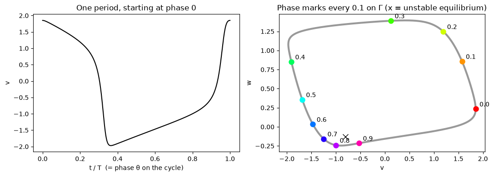
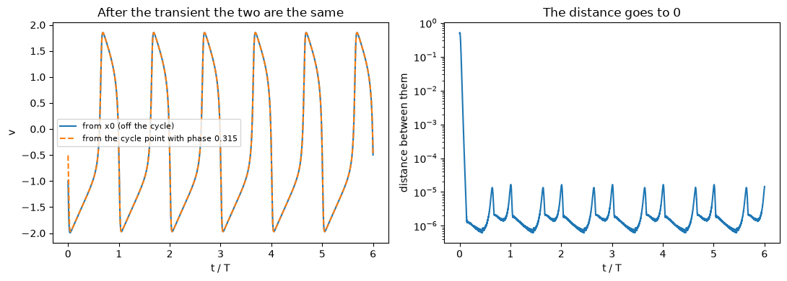
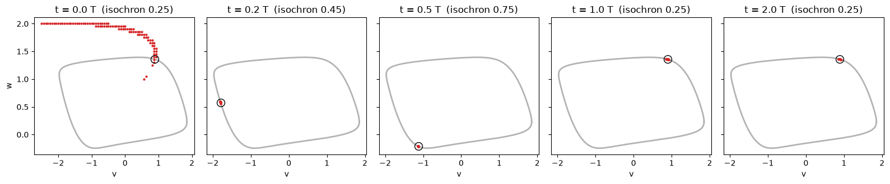
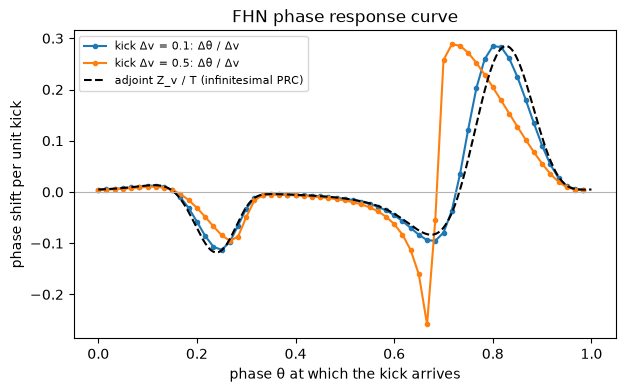
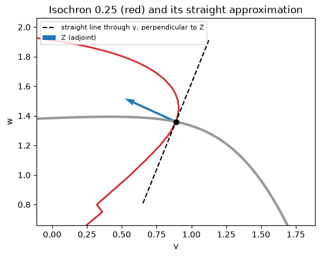
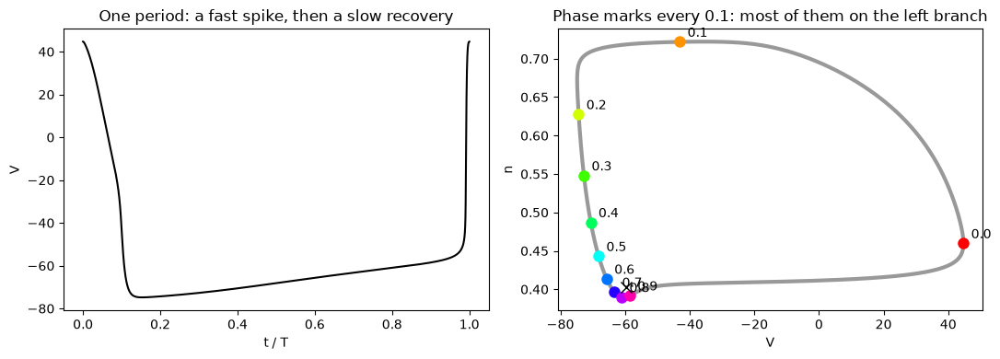
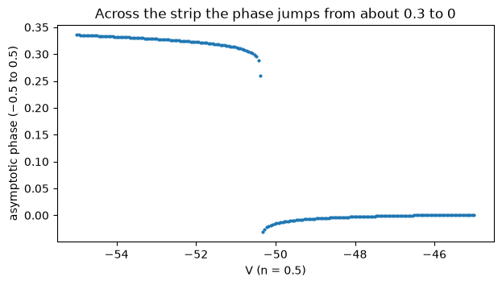

Library / Study kit / stage_01_basics-isochron.ipynb
Notebook 1: isochrons by brute force
FitzHugh–Nagumo then the reduced Hodgkin–Huxley model, by integrating every point.
Isochrons 01. What is an isochron? FitzHugh-Nagumo, then the reduced Hodgkin-Huxley neuron

An oscillator has a clock: its phase. On the limit cycle the phase is easy to read. This notebook answers one question: what is the phase of a point that is not on the limit cycle? The answer is the asymptotic phase, and the curves of equal asymptotic phase are the isochrons.
We build the idea in small steps, by computing everything:
| part | what you will see |
|---|---|
| A. FitzHugh-Nagumo | 1. phase on the cycle · 2. a point off the cycle catches up with one point of the cycle · 3. the phase map and its contour lines, the isochrons · 4. points on one isochron move together · 5. why it matters: kicks and the phase response curve · 6. near the cycle an isochron is a straight line |
| B. Reduced Hodgkin-Huxley | the same steps for the neuron of Osinga & Moehlis; why its isochrons are hard |
Every simulation runs in XPPAUT 8.2 through pyauto-xpp, and each
model’s .ode file is printed, so you can repeat any step in
XPPAUT itself.
Needs: pip install pyauto-xpp numpy matplotlib tqdm
Running in Google Colab? This cell installs pyauto-xpp first; elsewhere it does nothing.
import sys
if "google.colab" in sys.modules:
%pip -q install pyauto-xpp tqdm --find-links https://github.com/ZetaOne/pyauto-xpp/releases/expanded_assets/v0.3.0import tempfile
from pathlib import Path
import matplotlib.pyplot as plt
import numpy as np
from pyxpp.builder import ModelBuilder
from tqdm.auto import tqdm
WORK = Path(tempfile.mkdtemp())
plt.rcParams.update({"figure.dpi": 100, "axes.grid": False})Part A. FitzHugh-Nagumo
The FitzHugh-Nagumo model is the simplest model of an excitable neuron, and a relaxation oscillator like the van der Pol oscillator of Strogatz section 7.5:
\[ \dot v = v - \frac{v^3}{3} - w + I, \qquad \dot w = \varepsilon\,(v + a - b w) \]
v is a fast voltage-like variable, w a slow recovery variable. With a = 0.7, b = 0.8, ε = 0.08 and I = 0.5 the equilibrium is unstable and every trajectory goes to one stable limit cycle Γ: the neuron fires periodically.
A0. The model in XPPAUT
fhn = (ModelBuilder("fhn")
.ode("v", "v-v^3/3-w+i").ode("w", "eps*(v+a-b*w)")
.parameter(i=0.5, a=0.7, b=0.8, eps=0.08)
.initial(v=-1, w=1)
.option(total=400, dt=0.01, meth="rk4", bound=1e6, maxstor=200000))
print(fhn.render())
m = fhn.load(WORK / "fhn.ode")v'=v-v^3/3-w+i w'=eps*(v+a-b*w) par i=0.5,a=0.7,b=0.8,eps=0.08 init v=-1,w=1 @ total=400,dt=0.01,meth=rungekutta,bound=1000000.0,maxstor=200000 done
A1. Phase on the cycle
- Integrate long enough to land on the cycle (XPP: Initialconds > Go).
- Initialconds > Periodic finds the period T.
- Choose phase zero: the point γ0 where v is largest (the top of the spike).
- A point reached from γ0 after time t has phase θ = t/T, a number in [0, 1).
The phase is a clock that runs at a steady rate 1/T around the cycle.
m.run()
m.buttons.xi_vs_t("v")
m.buttons.initialconds.periodic() # XPP: Initialconds > Periodic
T = m.numerics["total"]
cyc = m.run(keep=False, total=T, dt=0.001)
k0 = int(np.argmax(cyc["v"])) # the top of the spike
gamma0 = np.array([cyc["v"][k0], cyc["w"][k0]])
m.set(v=gamma0[0], w=gamma0[1])
cyc = m.run(keep=False, total=T, dt=0.001) # one period, starting at phase 0
eq = m.equilibrium({"v": -0.5, "w": 0.0})
xstar = np.array([eq.x["V"], eq.x["W"]])
print(f"period T = {T:.4f}; gamma0 = ({gamma0[0]:.4f}, {gamma0[1]:.4f}); "
f"equilibrium x* = ({xstar[0]:.4f}, {xstar[1]:.4f}), eigenvalues {np.round(eq.eigenvalues, 3)}")
fig, (a1, a2) = plt.subplots(1, 2, figsize=(11, 4))
a1.plot(cyc.t / T, cyc["v"], color="k")
a1.set(xlabel="t / T (= phase θ on the cycle)", ylabel="v", title="One period, starting at phase 0")
a2.plot(cyc["v"], cyc["w"], color="0.6", lw=3)
for th in np.arange(0, 1, 0.1):
j = int(th * (len(cyc.t) - 1))
a2.plot(cyc["v"][j], cyc["w"][j], "o", color=plt.cm.hsv(th), ms=8)
a2.annotate(f"{th:.1f}", (cyc["v"][j], cyc["w"][j]), xytext=(6, 4), textcoords="offset points")
a2.plot(*xstar, "x", color="k", ms=9)
a2.set(xlabel="v", ylabel="w", title="Phase marks every 0.1 on Γ (x = unstable equilibrium)")
plt.tight_layout(); plt.show()period T = 39.4744; gamma0 = (1.8521, 0.2343); equilibrium x* = (-0.8048, -0.1311), eigenvalues [0.144+0.191j 0.144-0.191j]

The marks are crowded where the cycle moves slowly (the slow branches) and far apart on the fast jumps: equal steps in phase are equal steps in time, not in distance.
A2. A point off the cycle catches up with one point of the cycle
Take a point x0 that is not on Γ and integrate it. It converges to Γ, but where on Γ? Compare it with a point that moves around Γ. After the transient, the trajectory from x0 becomes indistinguishable from the trajectory of one particular point of Γ. That point’s phase is the asymptotic phase θ(x0) of x0:
\[ \lim_{t\to\infty} \big\| \Phi(t, x_0) - \Phi(t + \theta(x_0)\,T,\ \gamma_0) \big\| = 0 \]
How to measure it: wait until x0 has settled, note the time t_s of one of its spikes (v crossing 0 upward), and compare with the spike of the cycle that starts at γ0 at time t_c0. If x0 spikes earlier by a time Δ, it is ahead by Δ/T of a cycle:
\[ \theta(x_0) = \frac{t_{c0} - t_s}{T} \mod 1 \]
def upcross(t, v, thr=0.0):
"""times where v crosses thr upward (linear interpolation)"""
i = np.nonzero((v[:-1] < thr) & (v[1:] >= thr))[0]
return t[i] + (thr - v[i]) / (v[i + 1] - v[i]) * (t[i + 1] - t[i])
m.set(v=gamma0[0], w=gamma0[1])
ref = m.run(keep=False, total=6 * T, dt=0.01)
tc0 = upcross(ref.t, ref["v"])[0] # the cycle's first spike after gamma0
x0 = np.array([-1.0, 1.4]) # a point off the cycle
m.set(v=x0[0], w=x0[1])
tr = m.run(keep=False, total=6 * T, dt=0.01)
ts = upcross(tr.t, tr["v"])[-1] # a spike after settling
theta_x0 = ((tc0 - ts) / T) % 1
print(f"cycle spikes at t_c0 = {tc0:.3f} after gamma0; x0 spikes at t_s = {ts:.3f}")
print(f"asymptotic phase of x0 = ((t_c0 - t_s)/T) mod 1 = {theta_x0:.4f}")
# the point of the cycle with that phase, followed together with x0
g_th = np.array([np.interp(theta_x0 * T, cyc.t, cyc["v"]), np.interp(theta_x0 * T, cyc.t, cyc["w"])])
m.set(v=g_th[0], w=g_th[1])
tr2 = m.run(keep=False, total=6 * T, dt=0.01)
fig, (a1, a2) = plt.subplots(1, 2, figsize=(11, 4))
a1.plot(tr.t / T, tr["v"], label="from x0 (off the cycle)")
a1.plot(tr2.t / T, tr2["v"], "--", label=f"from the cycle point with phase {theta_x0:.3f}")
a1.set(xlabel="t / T", ylabel="v", title="After the transient the two are the same")
a1.legend(fontsize=8)
a2.semilogy(tr.t / T, np.hypot(tr["v"] - tr2["v"], tr["w"] - tr2["w"]))
a2.set(xlabel="t / T", ylabel="distance between them", title="The distance goes to 0")
plt.tight_layout(); plt.show()cycle spikes at t_c0 = 36.848 after gamma0; x0 spikes at t_s = 221.770 asymptotic phase of x0 = ((t_c0 - t_s)/T) mod 1 = 0.3154

A3. The phase map, and the isochrons as its contour lines
Do the same for every point of a grid: the asymptotic phase becomes a function θ(v, w) on the plane. The isochron of a point γ on Γ is the set of all points with the same asymptotic phase as γ, i.e. a contour line of θ. Points on one isochron end up moving together, in step with γ.
To be fast, many points are integrated in one XPP run: an XPP
network of N identical, uncoupled copies of the model
(v[0..N-1], w[0..N-1]). Its .ode
file:
NC = 200 # copies per XPP run
def network(name, fun, rhs, pars, opts):
"""N uncoupled copies of a 2-variable model as one XPP model; rhs = {var: expr} in terms of the
single-copy variables, which are rewritten to their indexed form var[j]"""
nb = ModelBuilder(name)
for sig, expr in fun:
nb.function(sig, expr)
names = list(rhs)
for var, expr in rhs.items():
e = expr
for other in names: # v -> v[j], w -> w[j] (whole words only)
e = __import__("re").sub(rf"\b{other}\b", f"{other}[j]", e)
nb.ode(f"{var}[0..{NC - 1}]", e)
return nb.parameter(**pars).option(maxstor=400000, **opts).load(WORK / f"{name}.ode")
FHN_RHS = {"v": "v-v^3/3-w+i", "w": "eps*(v+a-b*w)"}
net_fhn = network("fhn_net", [], FHN_RHS, dict(i=0.5, a=0.7, b=0.8, eps=0.08),
dict(meth="rk4", dt=0.01, bound=1e6))
print("\n".join(net_fhn.path.read_text().splitlines()[:4]), "\n...")
def phase_of(net, pts, T, tc0, var=("v", "w"), thr=0.0, nper=8, dt=0.01):
"""asymptotic phase of each point (NaN if it has not settled after nper periods)"""
pts = np.asarray(pts, float)
out = np.full(len(pts), np.nan)
net.numerics.update(dt=dt)
for i0 in range(0, len(pts), NC):
chunk = pts[i0:i0 + NC]
ic = {}
for j in range(NC):
x = chunk[j] if j < len(chunk) else chunk[0]
ic[f"{var[0]}{j}"], ic[f"{var[1]}{j}"] = x[0], x[1]
net.ics.update(ic)
A = net.run(total=nper * T, trans=(nper - 2.5) * T).array
t, V = A[:, 0], A[:, 1:1 + len(chunk)]
for c in range(len(chunk)):
s = upcross(t, V[:, c], thr)
if len(s) >= 2 and abs(s[-1] - s[-2] - T) < 1e-3 * T: # settled: spikes one period apart
out[i0 + c] = ((tc0 - s[-1]) / T) % 1
return out
vg, wg = np.linspace(-2.5, 2.5, 81), np.linspace(-1.0, 2.0, 61)
VG, WG = np.meshgrid(vg, wg)
grid = np.c_[VG.ravel(), WG.ravel()]
TH = np.concatenate([phase_of(net_fhn, grid[i:i + 1000], T, tc0)
for i in tqdm(range(0, len(grid), 1000), desc="FHN phase map")]).reshape(VG.shape)
print(f"{np.isnan(TH).sum()} of {TH.size} grid points did not settle (they start very near x*)")
# (the map is drawn below; it is also used in A4 and A6)
def no_wrap(F):
"""F with the grid points next to a jump of more than 0.5 masked: there the phase wraps
from 1 to 0 (or crosses a strip too thin for the grid), and a contour drawn through the
jump would be a false line"""
bad = np.zeros(F.shape, bool)
dx = np.abs(np.diff(F, axis=1)) > 0.5
dy = np.abs(np.diff(F, axis=0)) > 0.5
bad[:, :-1] |= dx; bad[:, 1:] |= dx; bad[:-1, :] |= dy; bad[1:, :] |= dy
return np.ma.masked_where(bad | np.isnan(F), F)
def draw_isochrons(ax, X, Y, TH, levels=np.arange(0.05, 1, 0.1), **kw):
"""contour lines of the phase. Levels near 0/1 are drawn from the phase shifted by half a
cycle, and grid cells at a jump are left out (no_wrap), so no false lines appear"""
S = (TH + 0.5) % 1
lo = [l for l in levels if 0.25 <= l <= 0.75]
hi = [(l + 0.5) % 1 for l in levels if not 0.25 <= l <= 0.75]
ax.contour(X, Y, no_wrap(TH), lo, **kw)
ax.contour(X, Y, no_wrap(S), sorted(hi), **kw)v[0..199]'=v[j]-v[j]^3/3-w[j]+i w[0..199]'=eps*(v[j]+a-b*w[j]) par i=0.5,a=0.7,b=0.8,eps=0.08 @ maxstor=400000,meth=rungekutta,dt=0.01,bound=1000000.0 ...
FHN phase map: 0%| | 0/5 [00:00<?, ?it/s]
0 of 4941 grid points did not settle (they start very near x*)
The phase map (made by
make_isochron_figures.py from the same kind of map, on a
finer grid). The colour is the asymptotic phase, and the black lines are
the isochrons θ = 0, 0.1, …, 0.9; the white dot is phase 0.

Points with the same colour end up together. Grid points coloured by their asymptotic phase, all integrated together and shown at a few moments: within about a period they are on the cycle, and each colour sits at its own point of it.

What to see: * Each isochron crosses the cycle once, at the point with that phase, and runs on both sides of it. * Inside the cycle all isochrons converge on the unstable equilibrium x: it has no asymptotic phase (it never reaches the cycle). This is the phaseless set. Isochrons are bunched where the phase changes quickly with position, spread out where it changes slowly.
A4. Points on one isochron move together
Take all grid points with phase ≈ 0.25 (one isochron), and integrate them. At every time they lie on one isochron again (of phase 0.25 + t/T), and they all converge onto the same moving point of the cycle. That is what “same asymptotic phase” means.
sel = grid[np.abs(TH.ravel() - 0.25) < 0.004]
times = [0, 0.2 * T, 0.5 * T, T, 2 * T]
snap = []
net_fhn.numerics.update(dt=0.01)
ic = {}
for j in range(NC):
x = sel[j] if j < len(sel) else sel[0]
ic[f"v{j}"], ic[f"w{j}"] = x[0], x[1]
net_fhn.ics.update(ic)
A = net_fhn.run(total=2 * T, trans=0).array
fig, axs = plt.subplots(1, len(times), figsize=(16, 3.4), sharey=True)
for ax, tt in zip(axs, times):
k = int(np.argmin(np.abs(A[:, 0] - tt)))
ax.plot(cyc["v"], cyc["w"], color="0.7", lw=2)
ax.plot(A[k, 1:1 + len(sel[:NC])], A[k, 1 + NC:1 + NC + len(sel[:NC])], ".", color="C3", ms=4)
th_now = (0.25 + tt / T) % 1
j = int(th_now * (len(cyc.t) - 1))
ax.plot(cyc["v"][j], cyc["w"][j], "o", mfc="none", mec="k", ms=10)
ax.set(title=f"t = {tt / T:.1f} T (isochron {th_now:.2f})", xlabel="v")
axs[0].set_ylabel("w")
plt.tight_layout(); plt.show()
The red points start spread along the isochron of phase 0.25. As time goes on they stay on one curve, which is an isochron again (the flow carries isochrons onto isochrons), and they shrink onto the circled point of the cycle, which has moved on by t/T.
A5. Why it matters: a kick and the phase response curve
A brief input (a current pulse) moves the state instantly, here by Δv. The state jumps from one isochron to another, and the difference of the two phases is the phase shift the kick causes: the oscillator now runs ahead or behind. Plotting the phase shift against the phase at which the kick arrives gives the phase response curve (PRC), the basic object of phase models of coupled and forced oscillators.
Below: the PRC for kicks Δv = 0.1 and 0.5, measured with the phase function of A2, and the infinitesimal PRC from XPP’s adjoint (Numerics > Averaging > New adj), which is the limit of small kicks: Δθ ≈ Z_v(θ) Δv / T.
ths = np.linspace(0, 1, 60, endpoint=False)
on_cycle = np.c_[np.interp(ths * T, cyc.t, cyc["v"]), np.interp(ths * T, cyc.t, cyc["w"])]
m.set(v=gamma0[0], w=gamma0[1])
m.run(keep=False, total=T, dt=0.001)
A_ = m.buttons.numerics.averaging
A_.parameters(2000)
A_.new_adj() # XPP: Numerics > Averaging > New adj
adj = m.data
fig, ax = plt.subplots(figsize=(7, 4))
for dv in (0.1, 0.5):
th_new = phase_of(net_fhn, on_cycle + [dv, 0], T, tc0)
dth = (th_new - ths + 0.5) % 1 - 0.5
ax.plot(ths, dth / dv, "o-", ms=3, label=f"kick Δv = {dv}: Δθ / Δv")
ax.plot(adj.t / T, adj["v"] / T, "k--", label="adjoint Z_v / T (infinitesimal PRC)")
ax.axhline(0, color="0.7", lw=0.8)
ax.set(xlabel="phase θ at which the kick arrives", ylabel="phase shift per unit kick",
title="FHN phase response curve")
ax.legend(fontsize=8)
plt.show()
Small kicks follow the adjoint curve; a large kick lands on an isochron far from the cycle, where the isochrons bend, and the response deviates. To know the effect of large kicks you need the isochrons far from the cycle: global isochrons. That is what Osinga & Moehlis compute.
A6. Near the cycle, an isochron is a straight line
Close to γ, the isochron I(γ) is almost a straight segment. Its direction n_s is perpendicular to the adjoint vector Z (the gradient of the phase). Below: the isochron θ = 0.25 from the phase map, and the straight line through γ(0.25) perpendicular to Z. This straight piece, of half-length η, is where the continuation method starts (stage 02).
th0 = 0.25
g = np.array([np.interp(th0 * T, cyc.t, cyc["v"]), np.interp(th0 * T, cyc.t, cyc["w"])])
Z = np.array([np.interp(th0 * T, adj.t, adj["v"]), np.interp(th0 * T, adj.t, adj["w"])])
ns = np.array([Z[1], -Z[0]]) / np.hypot(*Z)
fig, ax = plt.subplots(figsize=(6, 4.5))
ax.contour(VG, WG, TH, [th0], colors="C3", linewidths=2)
ax.plot(cyc["v"], cyc["w"], color="0.6", lw=3)
s = np.linspace(-0.6, 0.6, 2)
ax.plot(g[0] + s * ns[0], g[1] + s * ns[1], "k--", label="straight line through γ, perpendicular to Z")
ax.quiver(*g, *(Z / np.hypot(*Z) * 0.4), color="C0", angles="xy", scale_units="xy", scale=1, label="Z (adjoint)")
ax.plot(*g, "ko")
ax.set(xlim=(g[0] - 1, g[0] + 1), ylim=(g[1] - 0.7, g[1] + 0.7), xlabel="v", ylabel="w",
title="Isochron 0.25 (red) and its straight approximation")
ax.legend(fontsize=8)
plt.show()
Part B. The reduced Hodgkin-Huxley model
Now the same steps for the model of Osinga & Moehlis: voltage V
and potassium gate n (the paper’s eq. 4.1). It is also a relaxation
oscillator, but with a much stronger separation of time scales than FHN.
The .ode file:
FUN = [("am(v)", "0.1*(v+40)/(1-exp(-(v+40)/10))"), ("bm(v)", "4*exp(-(v+65)/18)"),
("an(v)", "0.01*(v+55)/(1-exp(-(v+55)/10))"), ("bn(v)", "0.125*exp(-(v+65)/80)"),
("minf(v)", "am(v)/(am(v)+bm(v))")]
HH_RHS = {"v": "iapp-gna*minf(v)^3*(0.8-n)*(v-ena)-gk*n^4*(v-ek)-gl*(v-el)",
"n": "an(v)*(1-n)-bn(v)*n"}
HH_PARS = dict(iapp=10, gna=120, gk=36, gl=0.3, ena=50, ek=-77, el=-54.4)
hb = ModelBuilder("reduced_hh")
for sig, expr in FUN:
hb.function(sig, expr)
hb = (hb.ode("v", HH_RHS["v"]).ode("n", HH_RHS["n"]).parameter(**HH_PARS).initial(v=-60, n=0.3)
.option(total=300, dt=0.01, meth="rk4", bound=1e6, maxstor=200000))
print(hb.render())
h = hb.load(WORK / "reduced_hh.ode")am(v)=0.1*(v+40)/(1-exp(-(v+40)/10)) bm(v)=4*exp(-(v+65)/18) an(v)=0.01*(v+55)/(1-exp(-(v+55)/10)) bn(v)=0.125*exp(-(v+65)/80) minf(v)=am(v)/(am(v)+bm(v)) v'=iapp-gna*minf(v)^3*(0.8-n)*(v-ena)-gk*n^4*(v-ek)-gl*(v-el) n'=an(v)*(1-n)-bn(v)*n par iapp=10,gna=120,gk=36,gl=0.3,ena=50,ek=-77,el=-54.4 init v=-60,n=0.3 @ total=300,dt=0.01,meth=rungekutta,bound=1000000.0,maxstor=200000 done
B1. Phase on the cycle
h.run()
h.buttons.xi_vs_t("v")
h.buttons.initialconds.periodic()
Th = h.numerics["total"]
hc = h.run(keep=False, total=Th, dt=0.001)
k0 = int(np.argmax(hc["v"]))
g0h = np.array([hc["v"][k0], hc["n"][k0]])
h.set(v=g0h[0], n=g0h[1])
hc = h.run(keep=False, total=Th, dt=0.001)
eqh = h.equilibrium({"v": -60, "n": 0.4})
xh = np.array([eqh.x["V"], eqh.x["N"]])
print(f"T = {Th:.4f} (paper 11.8463); gamma0 = ({g0h[0]:.3f}, {g0h[1]:.4f}); x* = ({xh[0]:.3f}, {xh[1]:.4f})")
fig, (a1, a2) = plt.subplots(1, 2, figsize=(11, 4))
a1.plot(hc.t / Th, hc["v"], color="k")
a1.set(xlabel="t / T", ylabel="V", title="One period: a fast spike, then a slow recovery")
a2.plot(hc["v"], hc["n"], color="0.6", lw=3)
for th in np.arange(0, 1, 0.1):
j = int(th * (len(hc.t) - 1))
a2.plot(hc["v"][j], hc["n"][j], "o", color=plt.cm.hsv(th), ms=8)
a2.annotate(f"{th:.1f}", (hc["v"][j], hc["n"][j]), xytext=(6, 4), textcoords="offset points")
a2.plot(*xh, "x", color="k", ms=9)
a2.set(xlabel="V", ylabel="n", title="Phase marks every 0.1: most of them on the left branch")
plt.tight_layout(); plt.show()T = 11.8463 (paper 11.8463); gamma0 = (44.706, 0.4597); x* = (-59.604, 0.4026)

Phases 0.1 to 0.9 are almost all on the slow left branch: the spike (the right half of the picture) takes only about a tenth of the period.
B2–B3. The phase map and the isochrons
Same method as A3 (a network of copies, phase from spike times with V crossing −20).
net_hh = network("hh_net", FUN, HH_RHS, HH_PARS, dict(meth="rk4", dt=0.01, bound=1e6))
h.set(v=g0h[0], n=g0h[1])
r = h.run(keep=False, total=3 * Th, dt=0.01)
tc0h = upcross(r.t, r["v"], -20)[0]
vh, nh = np.linspace(-90, 52, 101), np.linspace(0.3, 0.8, 81)
VH, NH = np.meshgrid(vh, nh)
gh = np.c_[VH.ravel(), NH.ravel()]
THH = np.concatenate([phase_of(net_hh, gh[i:i + 1000], Th, tc0h, var=("v", "n"), thr=-20)
for i in tqdm(range(0, len(gh), 1000), desc="reduced HH phase map")]).reshape(VH.shape)reduced HH phase map: 0%| | 0/9 [00:00<?, ?it/s]
The reduced HH phase map (from
make_isochron_figures.py): isochrons θ = 0, 0.1, …, 0.9 on
the colour-coded asymptotic phase, then grid points coloured by phase
converging onto the cycle.


Compare with FHN: * Outside the cycle the isochrons are almost horizontal: far from Γ the fast V motion dominates, so the phase is set mostly by n. * Inside the cycle the phase map is split by a sharp boundary along the middle branch of the V-nullcline: just left of it the phase is about 0.3, just right of it about 0. All the other phases are squeezed into this thin strip, thinner than any grid can resolve. Points on either side of the strip either jump left or fire a spike.
B4. Why this is hard
Zoom into the strip: the phase jumps from one value to another across a tiny distance.
Vline = np.linspace(-55, -45, 200)
pts = np.c_[Vline, np.full_like(Vline, 0.5)]
th_line = phase_of(net_hh, pts, Th, tc0h, var=("v", "n"), thr=-20)
fig, ax = plt.subplots(figsize=(7, 3.5))
ax.plot(Vline, (th_line + 0.5) % 1 - 0.5, ".", ms=4) # phase shown in [-0.5, 0.5): 0.99 is -0.01
ax.set(xlabel="V (n = 0.5)", ylabel="asymptotic phase (−0.5 to 0.5)",
title="Across the strip the phase jumps from about 0.3 to 0")
plt.show()
Even with 200 points over 10 mV the phase jumps from about 0.3 to about 0 between two neighbouring points (near V = −50.4). Making the grid finer does not help: the strip is exponentially thin, so the isochrons inside it cannot be drawn from a phase map, and they cannot be drawn by integrating backward either (the backward flow stretches distances by about 10^20 per period). Seeing them needs a different method: the continuation of orbit segments of Osinga & Moehlis, which is stage 02.
Summary
- Phase on the cycle: θ = t/T, a clock.
- Asymptotic phase of any point: the phase of the cycle point it ends up in step with; measured by comparing spike times after the transient.
- Isochron I(γ): all points with γ’s asymptotic phase; the contour lines of the phase map. Points on one isochron move together and converge onto one moving point.
- Phaseless set: points that never reach the cycle (the unstable equilibrium); every isochron ends there.
- Why: a kick moves the state across isochrons; the phase response curve is read off them. Near the cycle they are straight lines ⟂ the adjoint.
- Reduced HH: all phases are packed into a thin strip along the repelling middle branch; brute force cannot resolve it, so stage 02 uses continuation.